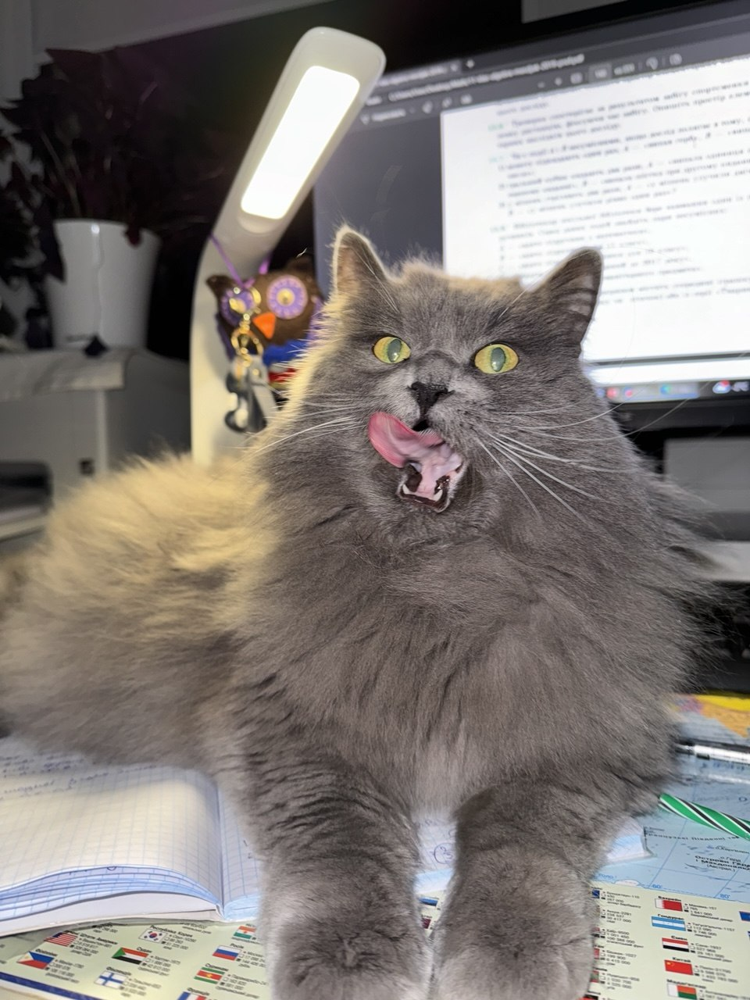

Mačky patria medzi obľúbené domáce zvieratá. Existuje mnoho plemien, ktoré sa líšia vzhľadom, veľkosťou a typom srsti.
V tomto článku predstavíme niekoľko plemien mačiek a ich základné vlastnosti. Každá mačka je však jedinečná a jej správanie ovplyvňuje aj prostredie a výchova.

| Plemeno | Srsť | Starostlivosť o srsť |
|---|---|---|
| Nebelung | Polodlhá | Pravidelné česanie |
| Mainská mývalia mačka | Polodlhá | Pravidelné česanie |
| Britská krátkosrstá mačka | Krátka | Občasné česanie |
| Siamská mačka | Krátka | Občasné česanie |
| Starostlivosť prispôsobte potrebám konkrétnej mačky. | ||